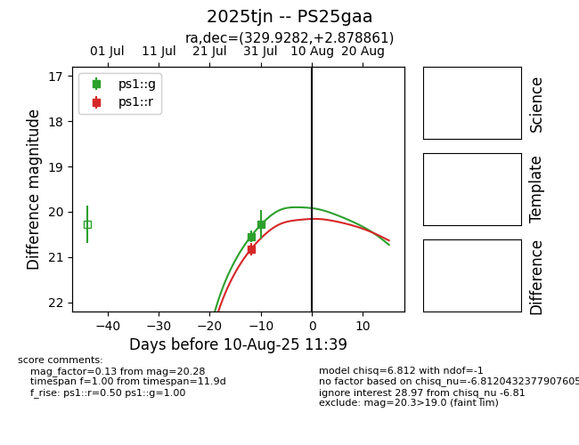

Target 2025tjn at 2025-08-10 13:58, see:
TNS: wis-tns.org/object/2025tjn
YSE: ziggy.ucolick.org/yse/transient_detail/2025tjn
alt names
2025tjn (yse,tns)
PS25gaa (panstarrs)
coordinates:
equatorial (ra, dec) = (329.9282,+2.87886)
galactic (l, b) = (62.0003,-38.89537)
photometry
last ps1::g=20.28, ps1::r=20.82
2 ps1::g, 1 ps1::r detections
